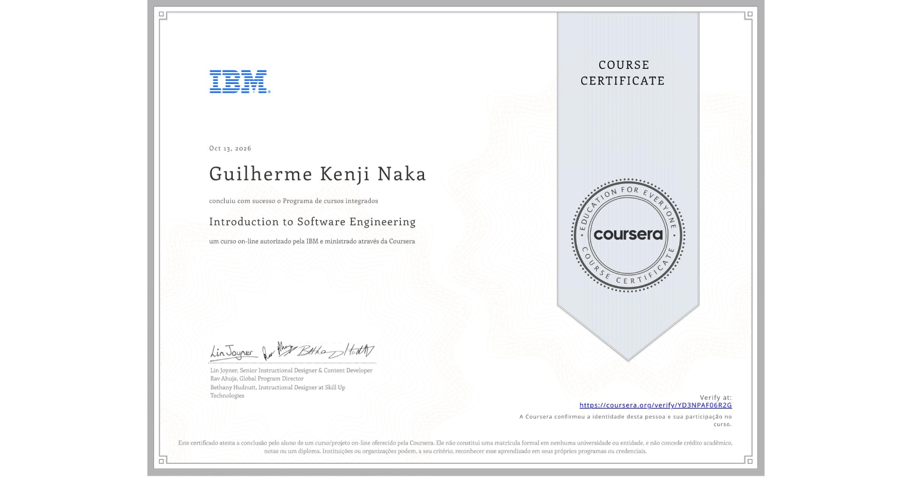

Udesc Esag - Ciências Econômicas
Janeiro de 2024 - Janeiro de 2028
Estudante de Ciências Econômicas
Florianópolis, Santa Catarina | Naturalidade: Jundiaí-SP | [e-mail censurado] | [telefone censurado]
Estudante de Ciências Econômicas, com experiência em rotinas administrativas e interesse em análise de dados e comportamento de usuários em ambientes digitais. Tenho perfil curioso, organizado e analítico, além de estar estudando desenvolvimento de sistemas e buscando ampliar meus conhecimentos em tecnologia e análise de informações.
Janeiro de 2024 - Janeiro de 2028

Janeiro de 2021 - Dezembro de 2023
Trabalho de conclusão de curso: Acessar TCC
Novembro de 2026 até o momento
Setembro de 2026 até Outubro de 2026
Novembro de 2024 até Setembro de 2026
Ferramentas: Microsoft Excel, Word, Outlook e Trello.
1 de 15 cursos concluídos · Formação em andamento na Coursera
Primeiro curso concluído em 13 de outubro de 2026.

Ver e validar certificado ↗Código de autenticação: b934a3154f9a678fa1f0fe99a80c9fd1